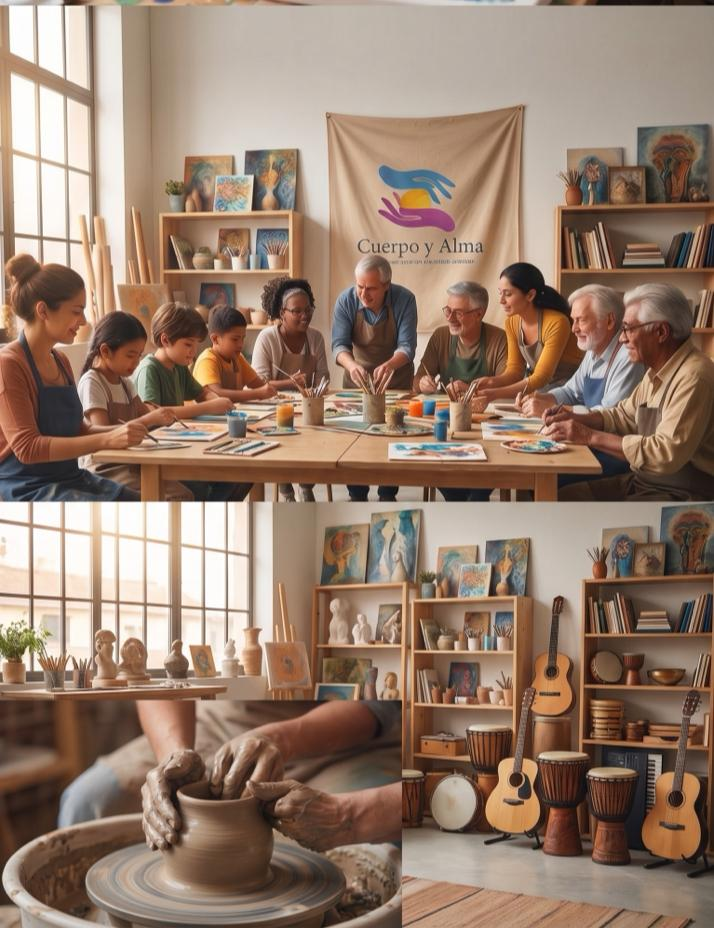

Misión
Promover el desarrollo artístico como derecho y como oficio: crear, formar e incluir, para que más personas puedan hacer y habitar las artes con rigor y sentido social.

Corporación para el desarrollo artístico
Formamos, creamos y acompañamos procesos artísticos. Ardila Dance Company es uno de los programas de la corporación: la danza como parte de un proyecto más amplio.
Conoce la corporación →

Quiénes somos
Cuerpo y Alma impulsa la creación, la formación y la circulación de las artes. Trabajamos con el cuerpo, la escena y la comunidad: no somos solo una compañía de danza, somos la casa que la sostiene.
Acompañamos procesos con rigor y sentido social, para que más personas puedan hacer y habitar las artes. Ardila Dance Company vive dentro de esa casa: es nuestro programa de danza contemporánea, no toda la corporación.
La corporación en territorio: formación y encuentro con la comunidad.
Identidad
Promover el desarrollo artístico como derecho y como oficio: crear, formar e incluir, para que más personas puedan hacer y habitar las artes con rigor y sentido social.
Ser un referente de gestión cultural y de formación artística, reconocidos por sostener compañías, escuelas y proyectos que conectan el oficio con el territorio.
Creación, formación, circulación y comunidad. Ardila Dance Company es el programa de danza contemporánea de la casa, no toda la corporación.


Procesos escénicos e investigación con el cuerpo y el relato al centro.
Talleres y acompañamiento para quienes crecen en las artes.
El arte fuera de la sala: barrios, escuelas y otros públicos.
Ardila Dance Company y otras líneas bajo el mismo techo.
Quiénes hacen la casa
Equipo multidisciplinario de la Corporación Cuerpo y Alma: dirección, formación, creación y acompañamiento en territorio.

Liderazgo artístico y de la casa
Talleres y procesos pedagógicos
Escena, cuerpo y relato
Territorio y encuentro
Líneas de trabajo
Así se organiza la corporación: programas que pueden crecer por su cuenta, siempre bajo el mismo techo.
Compañía de danza contemporánea de la corporación: obras, festival, talleres y trabajo en comunidad. Es una parte de Cuerpo y Alma, no toda la corporación.
Entrar al programa →
Encuentros, circulación y actividades que sacan las artes de la sala hacia otros públicos.
Preguntar →Sostener la casa
Tu aporte sostiene a la Corporación Cuerpo y Alma: formación, escena, comunidad y programas como Ardila Dance Company. Sin montos fijos.
Donaciones
Déjanos tus datos y te contactamos para coordinar el aporte.
Aliados
Empresas y personas que quieren sostener un programa o una temporada, a convenir.
Estamos cerca
Corporación Cuerpo y Alma
Para la corporación, la formación o el programa Ardila Dance Company.